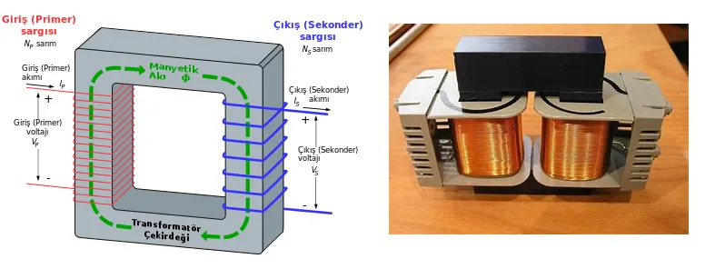
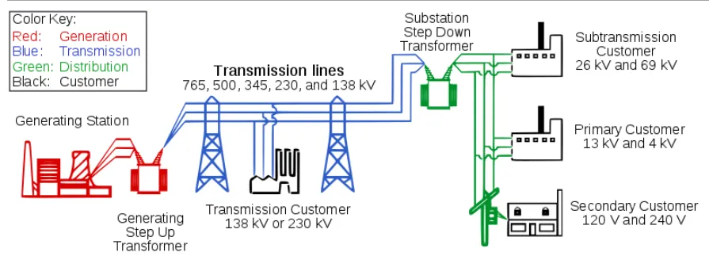

Son bir kaç makalemizde hep elektrik enerjisi üzerine konuştuk. Elektriğin maddelerin iç yapılarındaki (atom) dinamik etkilerden meydana geldiğini söyledik. Doğada kendiliğinden (statik elektrik) oluşabileceği gibi çeşitli birincil enerji kaynaklarını kimyasal veya radyoaktif tepkimelerde kullanmak suretiyle, elektrik enerjisini üretebilmekteyiz.
Özellikle bir önceki makalemizde, elektrik enerjisinin nasıl üretilebileceği konusuna değinmiştik. Üretilen bu elektrik enerjisinin, evlerimizdeki prizlere nasıl ulaştırıldığını da bu makalemizde inceleyeceğiz. Öncelikle kullanılabilir elektrik 2 farklı formda bulunabiliyor: Doğru akım ve alternatif akım.
Üretilen elektrik, her bir evin duvarlarında mevcut olan prizlere, alternatif akım formuyla gelir. Bunun başlıca sebebi, alternatif akım formundaki elektrik enerjisinin, gerilim değerinin bazı cihazlar aracılığıyla manyetik alanlar teorisi kullanılarak kolay bir şekilde değiştirilebilmesi denebilir. Bu cihazlara, transformatör denir. Bir başka ismiyle trafo.

Yandaki resim küçük bir trafodur. Görüldüğü üzere, etrafında iletken kablo sarılmış ve karşılıklı yerleştirilmiş 2 adet bobin mevcut. Bu bobinler genellikle demir bloklara sarılırlar (siyah renkli görünen blok). Sargılı 2 bobinden birine elektrik enerjisi verildiğinde, içindeki demir blok bir elektromanyetik akı oluşturur. Bu akı diğer taraftaki bobinde sarılı olan iletken tellerde sarım ve akı yönüne uygun olarak bir elektrik akımı oluşturur. Ancak burada dikkat edilmesi gereken en mühim nokta, birinci bobine uygulanan gerilim sabit olursa diğer bobinde herhangi bir gerilim meydana gelmez. Bu yüzden uygulanan akım alternatifi akım formunda olmalıdır.
Bir transformatörün çıkış sargısı, giriş sargılarından daha fazla sayıda ise çıkış gerilimi büyüyecektir. Akım miktarı ise, bu oranın tersiyle değişir. Transformatörler yardımıyla gerilimi yükseltmek mümkün olduğu gibi, düşürmek de mümkündür. Bu özelliği sayesinde çok uzak mesafelere elektrik enerjisisinin taşınabilmesi mümkün olabiliyor.

Elektrik enerjisi, elektrik santrallerinde üretildikten sonra transformatörler aracılığıyla gerilim değerleri artırılır ve 765.000 volta kadar bir gerilime sahip olabilirler. Bu gerilim miktarını evlerimizdeki prizlerde eriştiğimiz 220 volt ile kıyaslarsak durumun ciddiyetini anlayabiliriz sanıyorum. Bu yüksek volt değerindeki elektrik gerilimini sayesinde elektrik, uzun mesafelere taşınabilir hale gelir. Bu yükseklikteki gerilim değerlerine şehirler arası elektrik taşınmasında, elektriği taşıyan bakır veya alüminyum tellerin kendi iç dirençlerinden kaynaklanan kayıpları azaltmak amacıyla ulaşılır. Bunu genel güç formülünden hemen görebiliriz:
Burada P, kablodan geçen akım (I) sebebiyle direnci (R) belli olan iletim kablosunda oluşan güç kaybını ifade eder. Gücün bir başka tanımı ise
şeklinde verilebilir. Buradan transfer edilmek istenen güç P_trans, iletim telinden geçen akım (I) ve gerilim (V) ile doğru orantılı olduğu görülebilir. Transfer edilecek olan gücün sabit olduğundan gerilim (V) arttıkça, telden geçen akım (I) miktarı azalır. Böylece, kaybedilecek olan güç miktarı azaltılmış olunur.
Şehir merkezlerine yaklaşıldığında ise transformatörler bu sefer indirici trafo merkezlerinde, santrallerden alınan elektriği daha alçak seviyede gerilim değerlerine düşürür. Bu sayede üretilen elektrik enerjisi kontrol edilebilir seviyelere getirilmiş olur. Buradan da elektrik dağıtım şebekelerine gelinir ve elektrik enerjisi son kullanıcıya teslim edilmek üzere tekrardan işlemlerden geçer.
Santrallerde üretilen elektrik enerjisi neredeyse anlık olarak yüzlerce kilometre ötelerdeki evlere, fabrikalara ulaştırılır. Bu yüzden de santrallerde oluşturulan elektrik depolanmadan direkt olarak kullanılmak durumundadır. Bu da aslında anlık talep ne kadar azaltılırsa, o kadar az üretilmek durumunda kalınır demek oluyor. Örneğin, tasarruflu ampul, enerji verimliliği yüksek beyaz eşyalar gibi sürekli kullanımda olan cihazlar ne kadar tercih edilirse, elektrik enerjisi talebi önemli ölçüde azaltılmış olacaktır. Daha az talep daha az üretim ve daha az birincil kaynak tüketimi demektir.
Unutmayalım, damlaya damlaya göl olur.
Olabildiğince çevremizde lüzumsuz yere az bile olsa elektrik harcayan, bir küçük lamba veya hazırda uzun süre bekleyen bilgisayarlar gibi cihazları kapatmaya gayret göstermeliyiz. Bireysel olarak bakıldığında küçük görünen hareketler eğer tüm toplumda benimsenip yapılabilirse, çok ciddi ölçülerde tasarruf sağlanabilir.